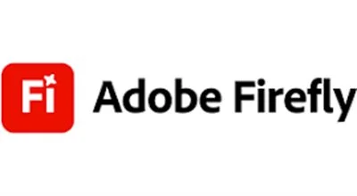
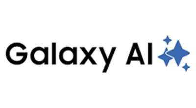
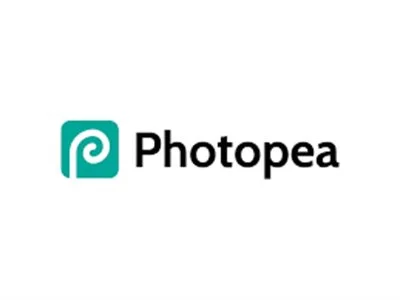

Najbolji AI Alati za Slike i Dizajn 2026 – Generirajte Nevjerojatne Vizuale
AI alati za generiranje slika u 2026. svima su dostupnili profesionalni grafički dizajn i stvaranje digitalnih likova — bez diplome iz dizajna. Trebate li kreirati fotografije proizvoda, generirati ilustracije, dizajnirati logotipe ili uređivati slike na razini Photoshopa — ovo su najbolji AI alati za slike i dizajn dostupni danas. Sve testirano i recenzirano od WebAlati tima.
Neki linkovi na ovoj stranici su affiliate linkovi. Možemo zaraditi proviziju bez dodatnih troškova za vas. Pravila →

Adobe Firefly
FreemiumGenerativni AI alat za slike duboko integriran u Photoshop i Illustrator. Komercijalno siguran (treniran na licenciranom sadržaju) s naprednom kontrolom stila i detalja.
Isprobaj Adobe Firefly →
OpenArt AI
FreemiumSveobuhvatna AI platforma koja kombinira više naprednih modela. Tekst-u-sliku, uređivanje, uklanjanje pozadina, slika-u-video i treniranje prilagođenih modela — sve u jednome.
Isprobaj OpenArt →
Galaxy AI
FreemiumAI platforma za generiranje vizualnog sadržaja koristeći napredne modele za slike i videe. Podržava kreativne procese za dizajn i medijsku produkciju u velome mjerilu.
Isprobaj Galaxy AI →
Artta AI
FreemiumPlatforma za generiranje digitalnih ilustracija i jedinstvenih vizualnih stilova iz teksta. Podržava kreativne dizajnerske procese za osobnu i komercijalnu upotrebu.
Isprobaj Artta AI →
Photopea
FreemiumNapredni online uređivač slika s punom PSD podrškom izravno u pregledniku. Realna besplatna alternativa za Photoshop — radi bez instalacije i registracije.
Isprobaj Photopea →Često Postavljana Pitanja – AI Alati za Slike
Koji je najbolji AI generator slika u 2026.?
Adobe Firefly je industrijski standard za profesionalno generiranje slika, posebno za komercijalnu upotrebu jer su njegovi modeli trenirani na licenciranom sadržaju. OpenArt AI je najsveobuhvatnija platforma za kombiniranje više modela.
Mogu li AI generirane slike koristiti komercijalno?
Da — Adobe Firefly slike su komercijalno sigurne. OpenArt AI, Galaxy AI i Artta AI također dopuštaju komercijalnu upotrebu. Uvijek provjerite specifične uvjete licenciranja za svaku platformu.
Postoji li besplatna alternativa za Photoshop?
Photopea je najboža besplatna online alternativa za Photoshop. Podržava PSD datoteke, radi u bilo kojim preglednicima i ima gotovo sve funkcionalnosti stolnog Photoshopa — potpuno besplatno.
Koja je razlika između AI generatora slika i AI editora slika?
AI generatori slika (poput Galaxy AI, Adobe Firefly, OpenArt AI) stvaraju nove slike iz tekstualnih opisa. AI editori slika (poput Photopea, Cleanup.pictures) mijenjaju ili poboljšavaju postojeće slike uklanjanjem pozadine, brisanjem objekata ili primjenom efekata. Mnogi kreatori koriste oboje: generiraju AI sliku, zatim je dorađuju editorom.
Kako izraditi YouTube sličicu koristeći AI?
Galaxy AI i Adobe Firefly su vrhunski izbori za generiranje AI sličica za YouTube. Nakon generiranja slike, uredite tekstualne oznake i raspored u Canvi ili Photopea-u. Za testiranje koja sličica bolje performira prije objave, koristite Thumbnailtest.com — A/B testiranje sličica može poboljšati YouTube CTR za 20-40%.
Neki linkovi na ovoj stranici su affiliate linkovi. Možemo zaraditi proviziju bez dodatnih troškova za vas. Pravila →